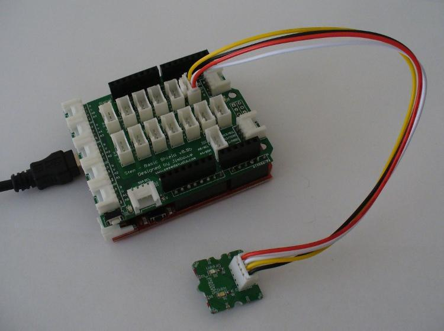

Now upload the following Arduino sketch:
// Project One - Double Blink
//
int del=500; // adjust for blink rate
void setup()
{
pinMode(1, OUTPUT);
pinMode(2, OUTPUT);
}
void loop()
{
digitalWrite(1, HIGH);
digitalWrite(2, LOW);
delay(del);
digitalWrite(1, LOW);
digitalWrite(2, HIGH);
delay(del);
}
As you can see, it is quite simple. The two LEDs alternately blink, with the delay between the two set by the variable del. However, in doing so you can experience for yourself how simple the Grove system is to use.
Copyright (c) 2008-2016 Seeed Development Limited (www.seeedstudio.com / www.seeed.cc)